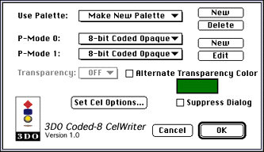
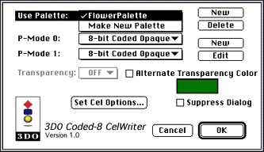

To create an 8-bit coded cel with an auto-generated palette follow these steps:
Load a source art file into Photoshop.
From the File menu, choose Export, then 3DO Coded 8.
In the Save dialog that appears, specify the location for the output cel.
The 3DO Coded-8 CelWriter dialog appears.

Figure 4: 3DO Coded-8 CelWriter dialog.
Make sure that Make New Palette is selected in the Use Palette pop-up and that 8-bit Coded Opaque is used for both P-Modes, then choose OK and you're done.
Suppressing and enabling the dialog
If you're batch-processing several cels, or expect not to change the settings for a while, you can check the Suppress Dialog option. The Coded-8 CelWriter saves silently without prompting for more information. To re-enable the dialog, hold down the Control key or the Option key while choosing Export > Coded-8 CelWriter.
The automatically generated palette may not be best for a particular piece of artwork. In this case, you can manually edit the palette and apply it to the cel. Note that you can apply the same custom palette to any number of cels, which can be very useful when working with an animation.
3DO palettes versus Photoshop palettes
The Coded-8 CelWriter recognizes two types of palettes:
A single 3DO PLUT chunk that 3DO Animator saves when you save a palette.
A palette such as Photoshop and DeBabelizer use with 32 RGB values.
Caution: If you are using a Photoshop or DeBabelizer palette with more than 32 colors, the Coded-8 CelWriter only reads the first 32.
How to edit a palette
To edit a palette for better results, you have to use 3DO Animator. If you have experienced questionable dependability using 3DO Animator in the past, keep in mind that you will only use 3DO Animator as a paletteediting tool.
Open the cel-not the original source art-in 3DO Animator.
From the 3DO Options menu, choose Show 3DO Palette. You may also want to open your original artwork to see the colors you're trying to accentuate. The colors in your cel appear in the palette.
Edit the palette colors as needed.
You can only change the 32 palette entries; the color bar across the top of the palette. A ramp of colors derived from the 8-color base palette is shown in the column beneath.
Editing the palette is described in the section "Customizing a Palette" in the 3DO Animator User's Guide, which is part of this volume.
Save the palette.
How to apply a custom palette to a cel
To apply a custom palette to an 8-bit coded cel:
Open the Coded-8 CelWriter and reload your original image (not the cel).
From the File menu, choose Coded-8 CelWriter.
Click on the New button in the upper-right corner of the window.
From the dialog that appears, load the palette you want to use.
The palette now becomes available in the Use Palette pop-up menu. For example, in the figure below, a palette called FlowerPalette was previously loaded and can now be used for any artwork it seems suitable for.

Figure 5: Dialog for specifying a palette.
Select the newly created palette from the Use Palette menu.
Set Options if desired, then choose OK to accept the cel with the newly edited palette.
Display the cel on a TV monitor to check your results. Repeat the steps in this section until you attain the desired results.
The 3DO Coded-8 CelWriter allows an artist to convert source art with thousands (16-bit) or millions (24-bit) of colors to a 3DO 8-bit coded cel with an extended 32- color palette.
The Coded-8 CelWriter automatically generates a palette for an 8-bit coded cel. Artists can also generate a custom palette and then apply that palette from within the Coded-8 CelWriter for better visual quality. The better the palette, the better the final cel art.
Why 8-Bit Coded Cels?
An 8-bit coded cel is unique in that its graphic representation format uses five bits for a palette of 32 colors and three bits as an alternate multiplier value (AMV). This allows for an extra seven colors per palette color.
To get the different shades, the RGB value can be multiplied with one of the multiplier factors (1-8), then divided by one of the divider factors (2, 4, 8, or 16).
Note: An 8-bit coded cel does not provide the same color breadth and quality as a 16-bit uncoded cel. However, it provides acceptable visual quality for many situations, especially considering the memory savings and increased performance.
Using 8-bit coded cels instead of 16-bit cels yields good visual quality and provides the following advantages:
Lower memory requirements
Better frame rate
Less load on the bus
Auto-Generated versus edited palettes
The Coded-8 CelWriter generates a palette that gives good color representation for most source art. There are certain types of artwork, however, for which the Coded-8 CelWriter generates a palette that's less than acceptable. This includes source art with high color coverage (lots of primary colors), and artwork that contains lots of gradients (different color clouds, mists, etc.). Two special cases are 3-D rendered objects and flesh tones:
3-D rendered art provides a particular problem for the Coded-8 CelWriter. The program has a hard time telling which smoothly shaded object to highlight and where the banding should be minimized. For these types of artwork, the artist should edit the palette by hand before remapping. This ensures the best possible output for the artwork.
Flesh tones occupy only a small portion of the color space and the human eye is very sensitive to it. It's difficult for the Coded-8 CelWriter to decide what colors are "flesh" and handle them appropriately. For example if you're trying to reduce a video character to an 8-bit coded cel, you may need to edit the palette by hand using 3DO Animator to allocate a larger number of color entries for the flesh tones than the Coded-8 CelWriter generated. This is discussed in "Using custom palettes with the Coded-8 CelWriter."